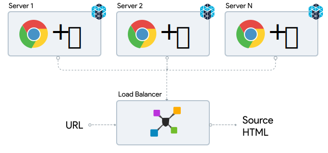

Rendering at Scale
with Chrome Debugging Protocol
About Me
GP
Principal Engineer, Indix™
 paambaati
paambaati
 @thundubeedi
@thundubeedi
Rendering 101
Rendering is what a browser does to display contents of a webpage.
Rendered webpage's source HTML is our target.
Isn't that called "crawling"?
Yes and no.
Crawling is fetching simple webpages, and doesn't work with SPAs, PWAs and webpages that use Ajax to lazily load data.
Rendering is intelligently fetching the page source for any kind of webpage.
Why do we need this?
Webpages are one of our many sources of product information.
Indix has more than ⚡️1 billion products across 62K brands from 2400 websites, and is tracking & discovering more every second.
Real-world challenges
- Evolution of JavaScript frameworks and client-side rendering.
- Geo-blocking.
- 🤖 Bot detection & mitigation services (Distil, Cloudflare Webapp Firewall, Akamai Bot Manager, ShieldSquare, etc).
Say hi to CDP!
Chrome Debugging Protocol is a set of APIs you can use to programatically control Chrome.
Effort is underway to standardize CDP API across all browsers (see RemoteDebug project).
It was originally built alongside "headless" mode for making automation testing easier.
Wait, what about Selenium, PhantomJS & Nightmare.js?
They're all too big, too slow, require a dummy display driver and/or don't have low-level network APIs for our usecase.
☠️ PhantomJS is no longer actively maintained after headless Chrome came out.
What can CDP do?
CDP exposes a remote debugging port, to which you can connect and start sending commands. Some of the cool things you can do include —
- Track all requests on the page, and intercept/modify them.
- Execute custom JavaScript.
- Get page metrics like first meaningful paint, page load time, etc.
- Generate screenshots or PDFs.
- Auto-fill & submit forms.
- Emulate interactions like scrolls, clicks and touch gestures.
Clients out in the wild
Interest in CDP has shot through the roof in the past few months, and so there are a lot of new clients on top of the protocol.
| Client | Language |
|---|---|
| Puppeteer* | Node.js |
| Navalia | Node.js |
| gcd | Golang |
| PyChromeDevTools | Python |
| cdp4j | Java |
| chrome-reactive-kotlin | Kotlin |
Meanwhile at Indix…
🐎 Shadowfax
... is our in-house rendering engine for Ajax-based sites, built on top of CDP.
Shadowfax is an NPM module, and predates the Chrome team's Puppeteer & Rendertron projects by months. It started as an experiment on the then-new headless mode.
How it works
- Establish connection to Chrome's remote debugging socket.
- Open new tab with
createTarget()command. - Send
navigate(url)command to navigate to given URL. - Start listening for
requestWillBeSentevents. - Watch requests until they become idle.
- Execute
document.documentElement.outerHTMLwithRuntime.evaluate()to get full HTML source. - Remove event listeners & close tab with
closeTarget()command. - Return HTML.
Scaling Shadowfax
Approach #1
(Shadowfax + Background Chrome) + Docker + Mesos = 🙁
What happened
- Chrome would frequently segfault.
Scaling Shadowfax
Approach #2
Shadowfax + Docker + Chrome As A Service + Mesos = 🙁
What happened
- Chrome's CPU usage would climb up, eventually leading to CPU soft-lockups.
- Chrome would frequently segfault.
Scaling Shadowfax
Approach #4961
Shadowfax + On-Demand Chrome + Mesos = 😎
What we learned
- Chrome is incredibly unstable when run inside Docker.
- Background Chrome slowly eats up RAM & CPU.
- Launching Chrome for each request was better for overall stability; we could live with the additional delay (~ 700 ms).
Shadowfax Architecture
